Como usar o Segundo Cérebro
Do download ao primeiro pedido, e depois a tudo o que ele faz: este manual segue o caminho de quem está começando, com a tela de cada passo. Dá para ler do começo ao fim ou ir direto ao que você precisa pelo índice.
Passo 1Instalar e entrar
O Segundo Cérebro é um aplicativo para Windows, Mac e Linux. Ele conversa com você, mas também trabalha: lê e cria arquivos na sua pasta, pesquisa na internet, abre sites, gera imagens e mais. Também dá para usar pelo navegador, sem instalar nada (veja o passo 14).
- Baixe o aplicativo na página inicial. O site já mostra o botão certo para o seu sistema.
- Instale. No Windows, abra o arquivo baixado e siga o assistente. Se o Windows avisar "O Windows protegeu o computador", clique em Mais informações e depois em Executar assim mesmo: o aplicativo ainda não tem assinatura digital paga. No Mac, arraste o app para a pasta Aplicativos e, na primeira vez, abra com o botão direito do mouse e escolha Abrir.
- Abra o Segundo Cérebro e entre com o e-mail e a senha da sua assinatura (a senha você criou pelo e-mail que enviamos depois da compra). Esqueceu? Use Esqueci a senha na própria tela de entrada.
- Espere a preparação da primeira vez. O aplicativo prepara o assistente que trabalha no seu computador. Uma tela mostra o cérebro, a barra de 0 a 100% e quanto falta. Acontece só uma vez; depois o assistente abre em segundos.
Passo 2Conhecendo a tela
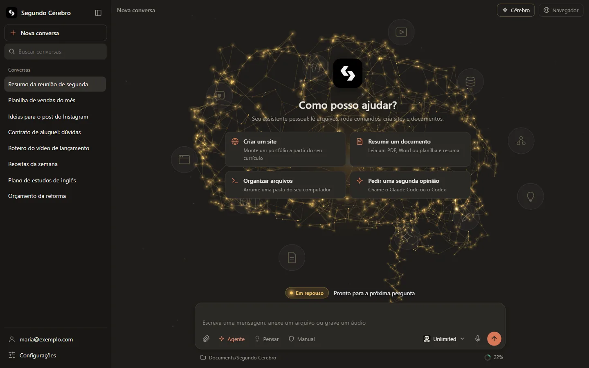
| Onde | O que é |
|---|---|
| Barra lateral (esquerda) | Nova conversa, a busca e a lista das suas conversas (as fixadas ficam no alto). Embaixo estão a sua conta e as Configurações. O botão no topo recolhe a barra. |
| Topo | O nome da conversa e dois botões: Cérebro (mostra o assistente trabalhando) e Navegador (abre um navegador ao lado do chat). |
| Caixa de mensagem | Onde você escreve. Embaixo dela: clipe (anexar), Agente (modo de trabalho), Pensar (quanto raciocinar), escudo (permissões), a IA escolhida, o microfone (ditado por voz) e o botão de enviar. |
| Rodapé | A pasta de trabalho (onde o assistente lê e cria arquivos) e o medidor do tamanho da conversa. |
Passo 3Seu primeiro pedido
Escreva do jeito que você falaria com uma pessoa e aperte Enter. Para quebrar linha, use Shift + Enter.
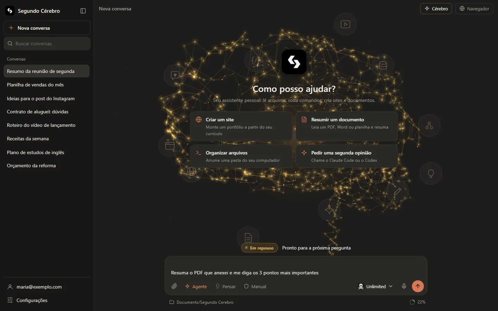
Enquanto trabalha, o cérebro acende e uma frase mostra o que ele está fazendo naquele momento ("Escrevendo", "Abrindo a internet", "Lendo uma skill"). Você pode continuar falando: sua nova mensagem entra no meio do trabalho para corrigir o rumo.
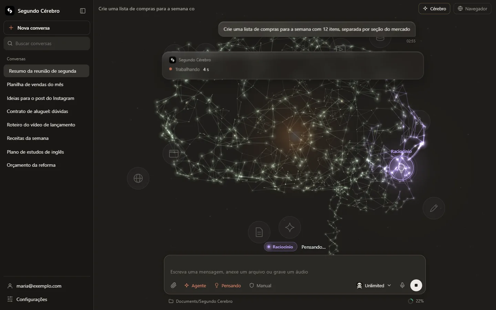
Quando termina, a resposta aparece num cartão. Clique em "Trabalhou por X s" para ver cada passo que ele deu (arquivos lidos, comandos, buscas).
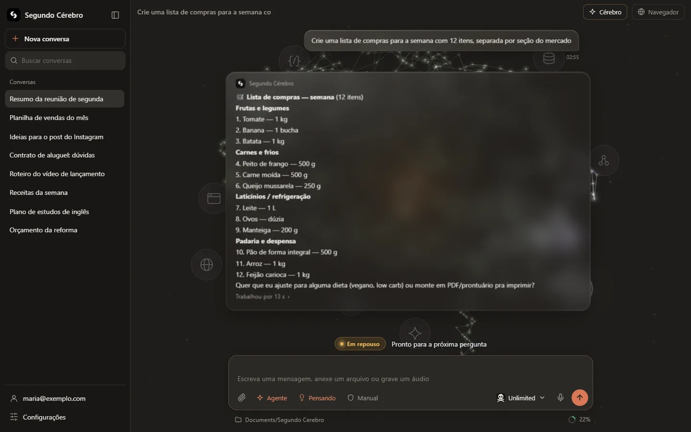
Pedidos que funcionam bem
Passo 4Anexar arquivos
- Clique no clipe da caixa de mensagem e escolha os arquivos, ou arraste e solte direto na tela do chat.
- Acompanhe a barra de envio (arquivos grandes, como vídeos, sobem em pedaços).
- Escreva o que quer fazer com eles e envie.
Funciona com documentos (PDF, Word, Excel), imagens, áudios e vídeos. Também funciona pelo acesso web, no celular.
Passo 5Escolher a IA e o modo
No canto direito da caixa de mensagem fica a IA que vai responder. Clique nela para trocar.
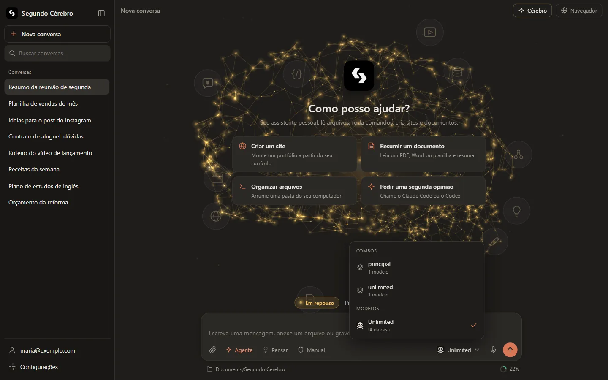
Pensar
Controla o quanto a IA reflete antes de responder. Para perguntas rápidas deixe no automático; para problemas difíceis (contas, estratégia, código) aumente.
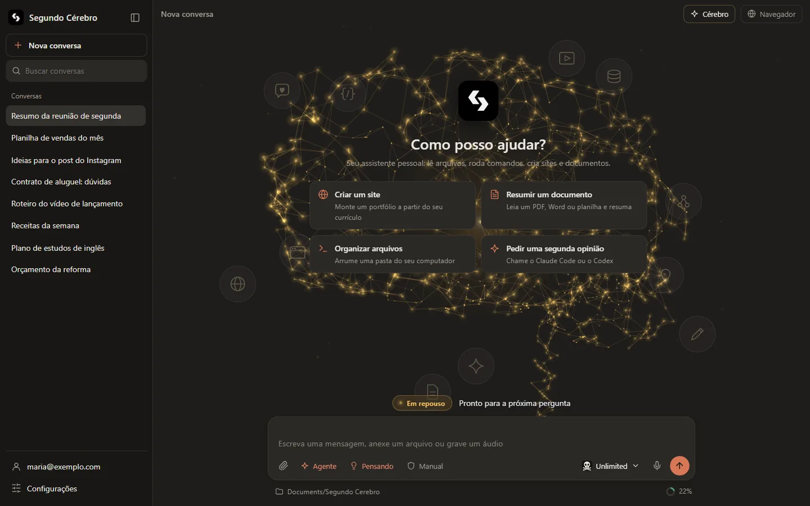
Agente ou só conversa
No modo Agente ele usa ferramentas de verdade (arquivos, internet, comandos). Desligado, ele só conversa, mais rápido e sem mexer em nada.
Passo 6Permissões do agente
O assistente trabalha no seu computador, então você decide o quanto ele pode fazer sozinho. Clique no escudo.
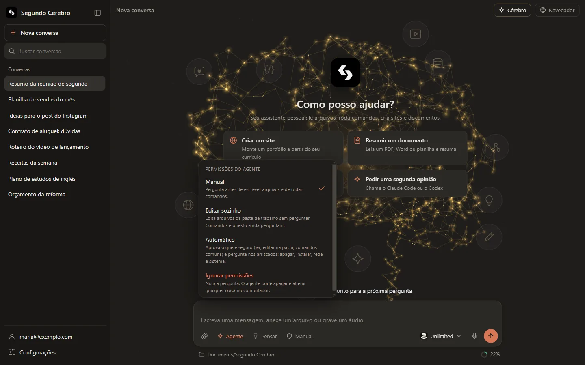
| Modo | Quando usar |
|---|---|
| Manual | Pergunta antes de escrever arquivos e rodar comandos. O mais seguro, ótimo para começar. |
| Editar sozinho | Edita arquivos da pasta de trabalho sem perguntar; pergunta para o resto. |
| Automático | Aprova o que é seguro (ler, editar na pasta, comandos comuns) e pergunta o que for arriscado. |
| Ignorar permissões | Nunca pergunta. Só use numa pasta de teste: ele pode apagar e alterar arquivos. |
Passo 7Conectar Claude, ChatGPT e Gemini
Você pode usar a sua própria assinatura do Claude, do ChatGPT ou do Gemini dentro do Segundo Cérebro, ao lado da nossa IA. Todas passam a ter a mesma memória e as mesmas skills. Você não precisa de chave de API.
- Clique em Configurações (embaixo, à esquerda) e abra Provedores.
- Em Disponíveis, escolha Claude Code (assinatura Claude), OpenAI Codex (assinatura ChatGPT) ou Gemini CLI. Use a busca ou o filtro Assinatura para achar.
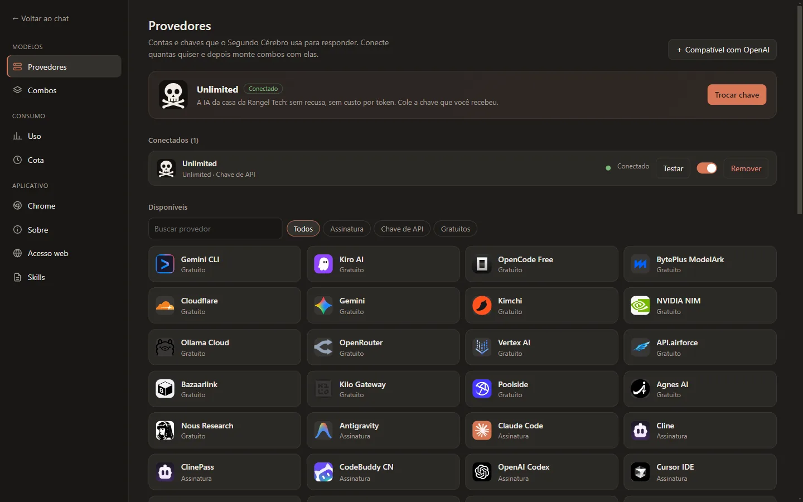
- Na janela que abrir, clique em Entrar com a conta.
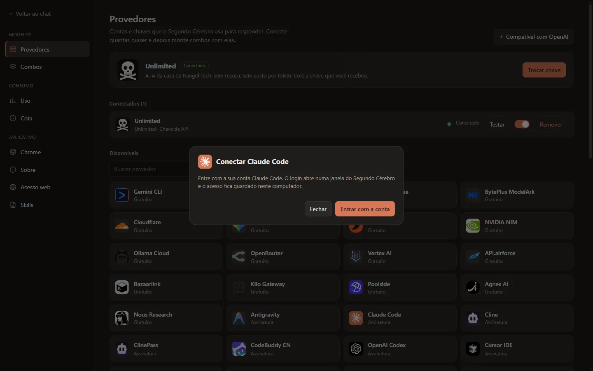
- Abre uma janela do próprio Segundo Cérebro com o login da empresa. Entre com a sua conta e, no fim, a janela fecha sozinha e a conta aparece conectada. Você não precisa copiar nenhum endereço.
- Pronto: a IA aparece no menu de escolha, e você pode usá-la numa conversa ou montar um combo.
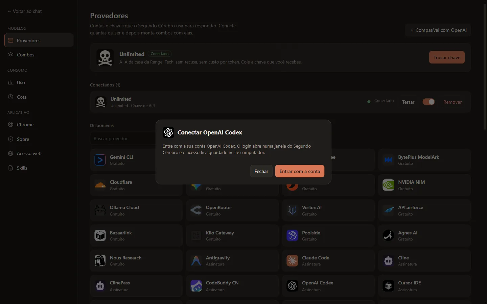
Passo 8Combos: várias IAs trabalhando juntas
Um combo é um grupo de IAs numa ordem. Se a primeira falhar ou atingir o limite, ele passa para a seguinte sozinho. Ou divide o trabalho entre elas (rodízio).
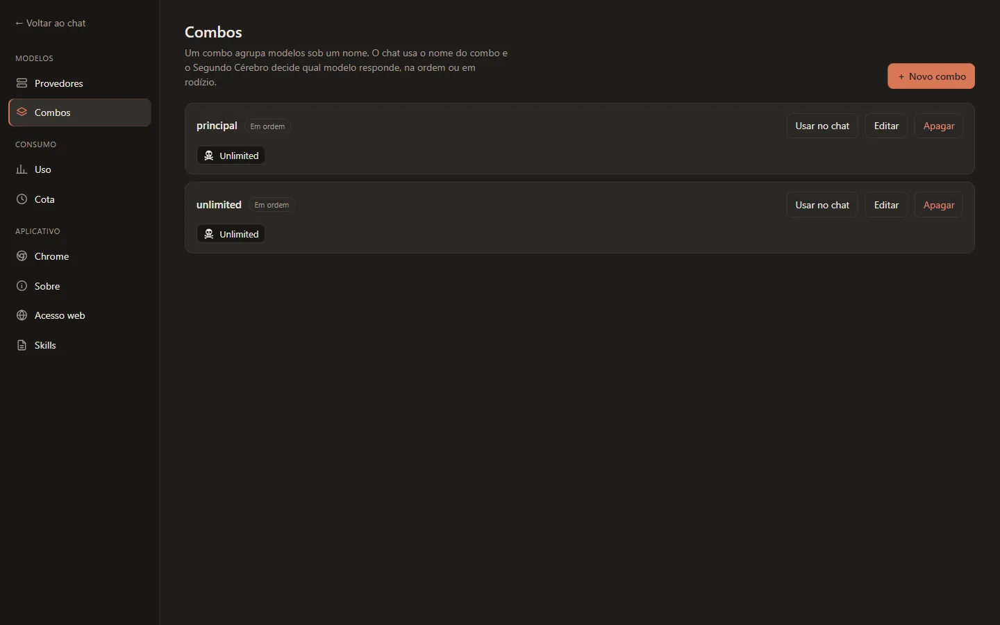
Cada IA que você conecta ganha um combo automático. Além disso, o próprio assistente sabe consultar outra IA para uma parte do trabalho: peça, por exemplo, "planeje com o Claude e execute com a Unlimited" ou "peça uma segunda opinião ao ChatGPT".
Passo 9Skills: ensinando o assistente
Uma skill é um manual de como fazer uma tarefa do jeito certo (montar um vídeo, escrever um contrato, analisar uma planilha). O assistente consulta as skills sozinho quando o pedido combina com elas, e você também pode pedir uma pelo nome.
Pedir uma skill
Ver, buscar e criar
- Abra Configurações → Skills.
- Use a busca ou abra as pastas para ver as skills disponíveis. As da Rangel Tech são somente leitura (para editar, copie).
- Clique em Nova skill para criar a sua, ou peça: "crie uma skill com o jeito que eu escrevo e-mails". Ele escreve e guarda.
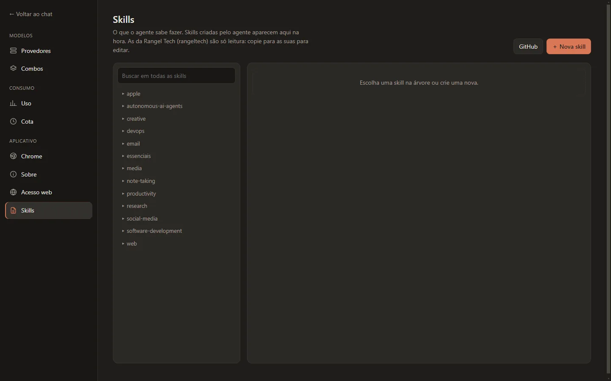
Passo 11O cérebro ao vivo
O botão Cérebro mostra, em tela cheia, o assistente pensando: o cérebro acende e se liga ao que ele está usando naquele momento (arquivos, internet, skills, memória, imagem). Serve para acompanhar tarefas longas sem ler cada passo.
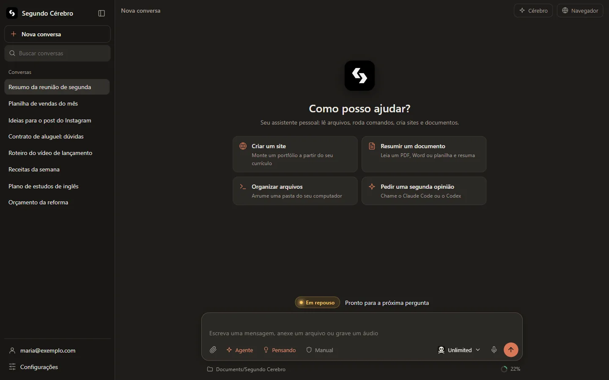
Passo 12Imagem, vídeo e voz
Peça direto no chat. O assistente escolhe a ferramenta certa:
Vídeos e trocas de voz levam alguns minutos: o app avisa no chat quando o arquivo fica pronto, e você pode seguir conversando. Os arquivos ficam nas pastas Imagens e Videos dentro da sua pasta de trabalho. A quantidade por mês depende do plano; passou do limite, você pode comprar créditos avulsos.
Passo 13Uso, limites e créditos
Em Configurações → Uso você vê quanto da assinatura já usou: a janela de 5 horas e a semana, com quando cada uma zera. Embaixo, o Uso por IA mostra quanto cada IA conectada trabalhou neste computador.
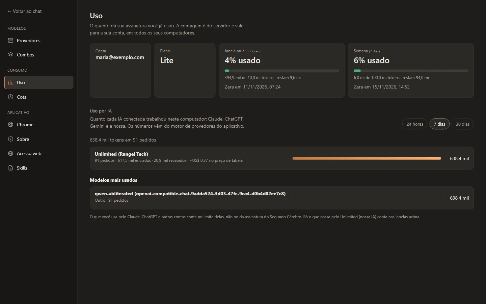
Quando o limite do plano acaba, o aplicativo avisa e oferece: esperar zerar, comprar créditos avulsos ou subir de plano. Em Cota você acompanha o que sobra nas contas que conectou.
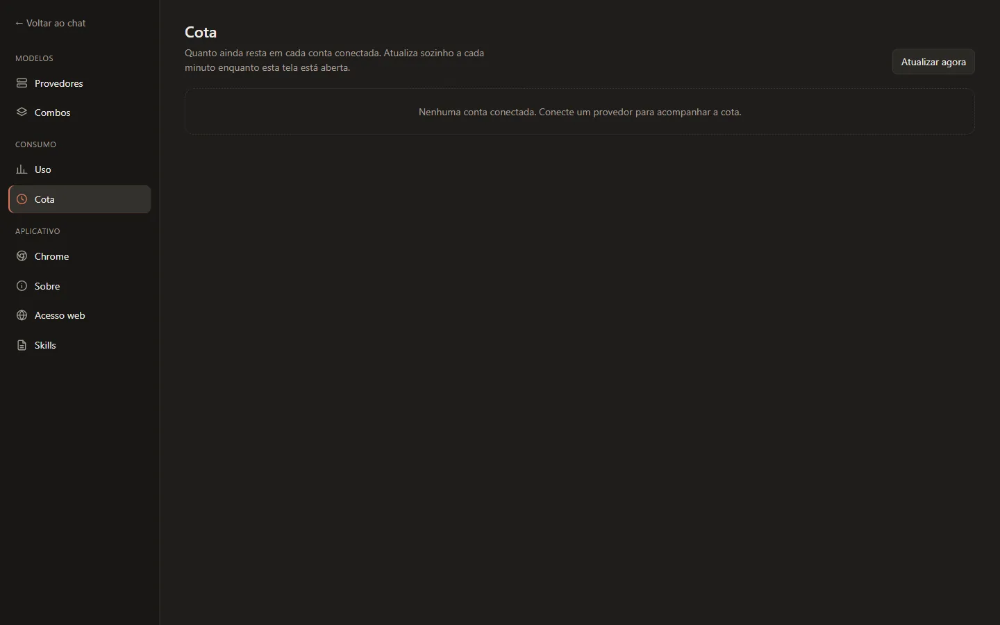
Passo 14Pelo navegador e pelo celular
Você pode conversar com o Segundo Cérebro de qualquer lugar. O trabalho acontece no seu computador (ou na sua máquina virtual); a tela web é só o controle remoto.
1. Ligue no computador
No aplicativo: Configurações → Acesso web e ligue Permitir acesso pela web. Se você tem uma máquina virtual, ela já vem ligada.
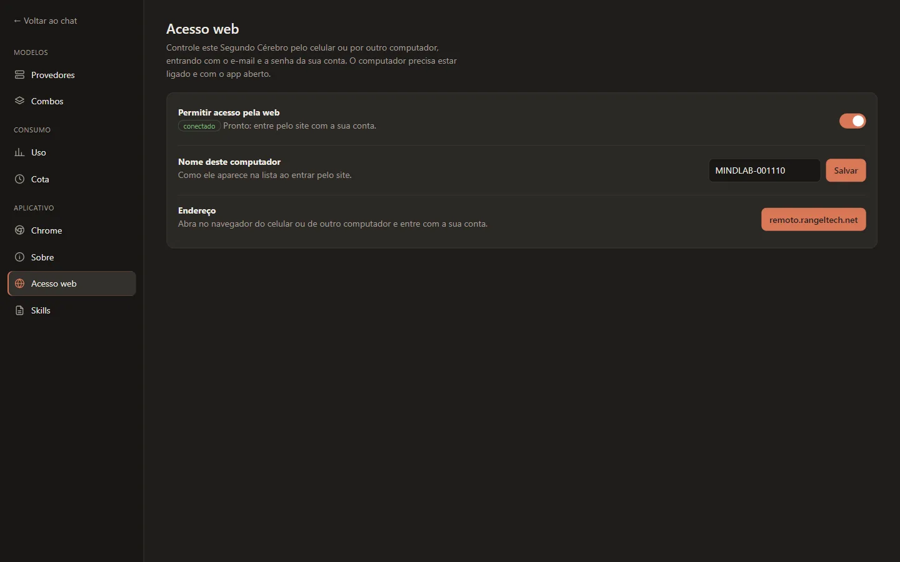
2. Entre pelo navegador
- Abra remoto.rangeltech.net no celular ou em qualquer computador.
- Entre com o mesmo e-mail e a mesma senha do aplicativo.
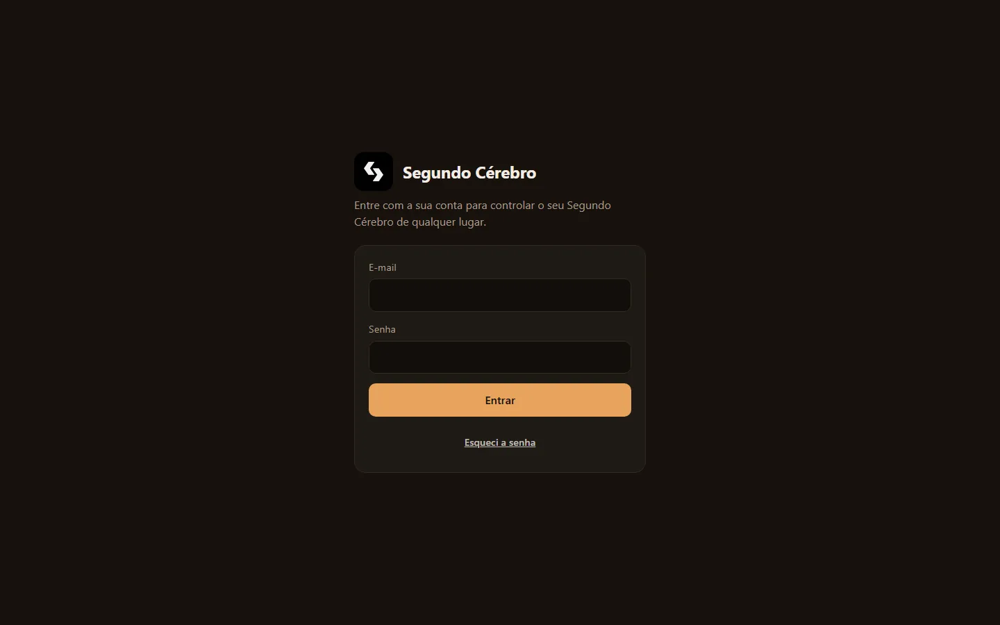
- Escolha o computador que quer controlar (se tiver só um, ele abre direto).
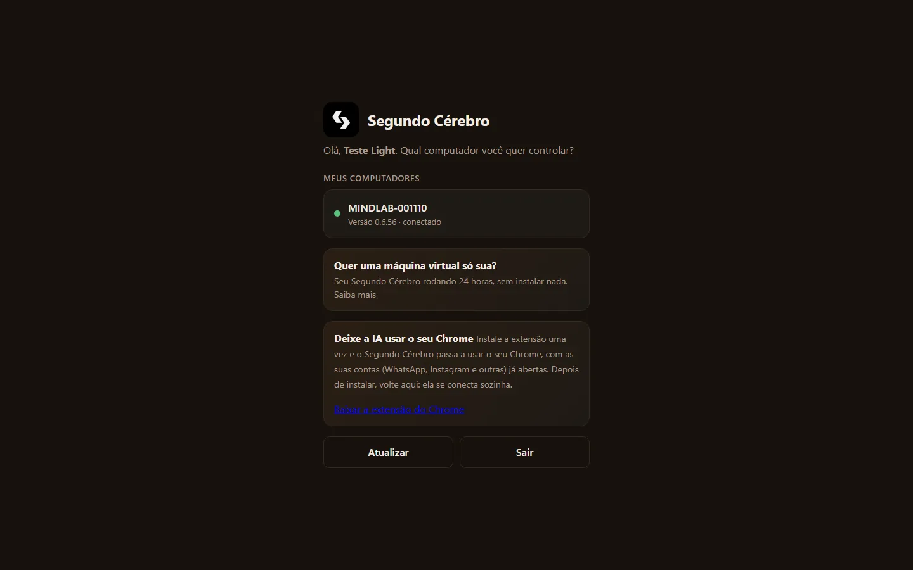
- Converse como no aplicativo: as mesmas conversas, os mesmos arquivos, o mesmo assistente.
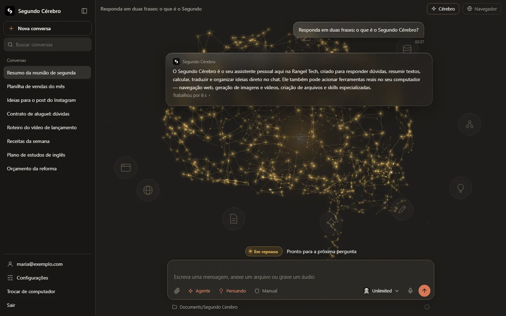
Passo 15Se algo der errado
| O que aconteceu | O que fazer |
|---|---|
| Esqueci a senha | Na tela de entrada (aplicativo ou web) clique em Esqueci a senha. Chega um e-mail com o link; olhe o spam. |
| A preparação da primeira vez está demorando | Depende da internet. Deixe aberto; ela continua se a conexão voltar. Se parar por mais de 10 minutos, feche e abra o aplicativo. |
| O Windows bloqueou a instalação | Clique em Mais informações → Executar assim mesmo. |
| "Limite atingido" | Veja em Configurações → Uso quando zera, ou compre créditos avulsos, ou suba de plano. |
| O login do Claude/ChatGPT não conclui | Confira se a assinatura deles está ativa. Feche a janela de login e tente de novo. Pela web, instale a extensão do Chrome. |
| O acesso web diz que o computador está offline | No computador, abra o aplicativo e confira Configurações → Acesso web. O computador precisa estar ligado e com internet. |
| Quero ver o que aconteceu por trás | Em Configurações → Sobre há o botão para abrir os registros; envie-os ao suporte. |
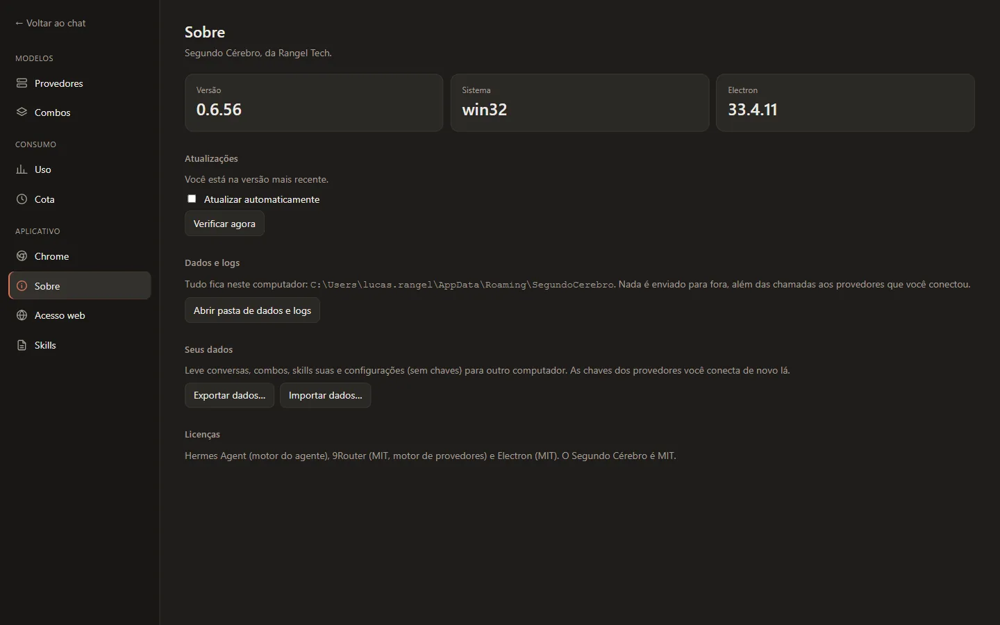
Ainda com dúvida? Fale com a nossa equipe pelo canal informado na confirmação da sua compra.